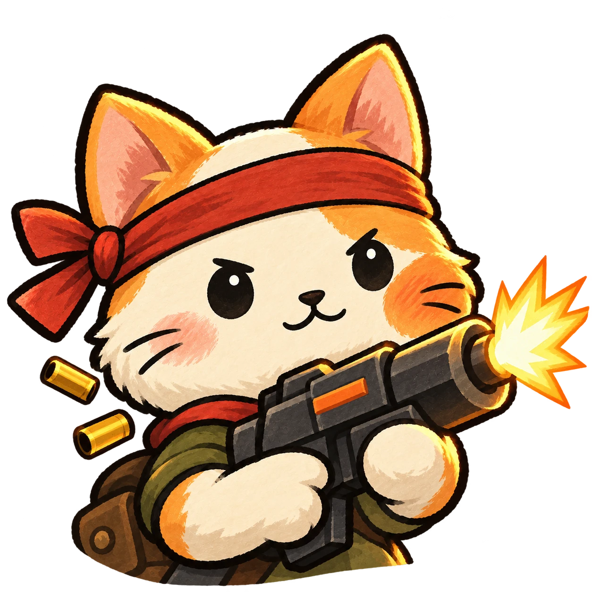
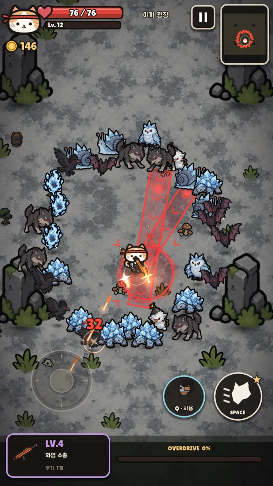
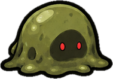
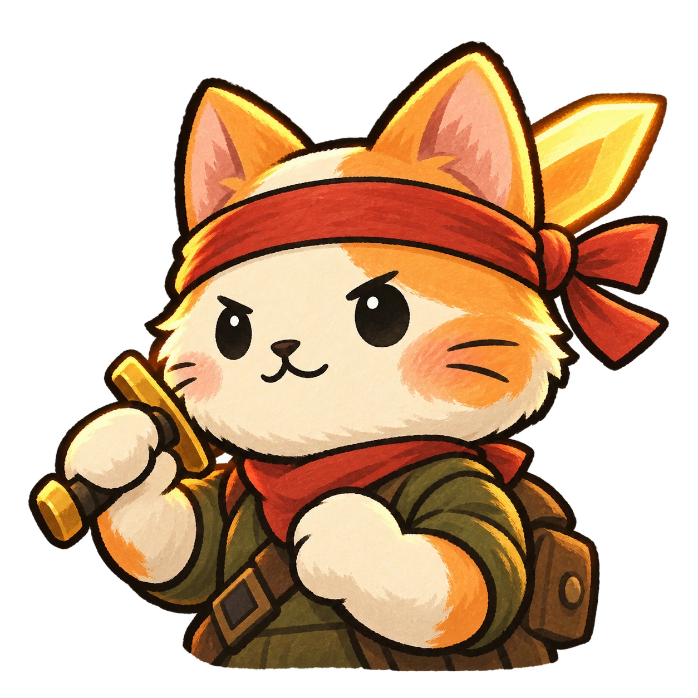
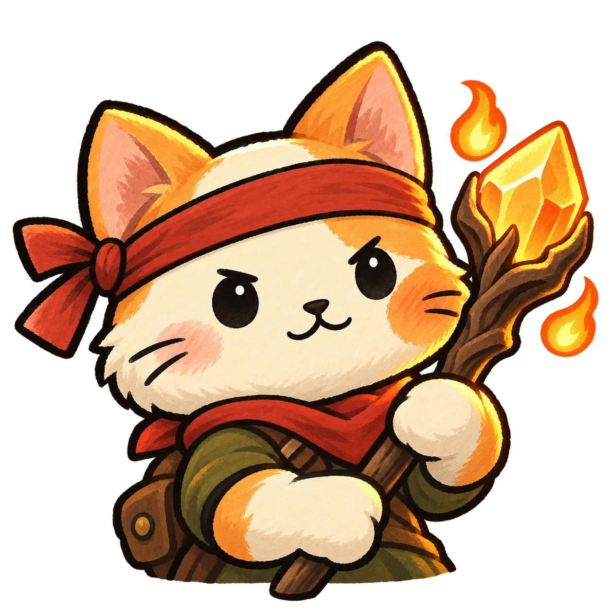
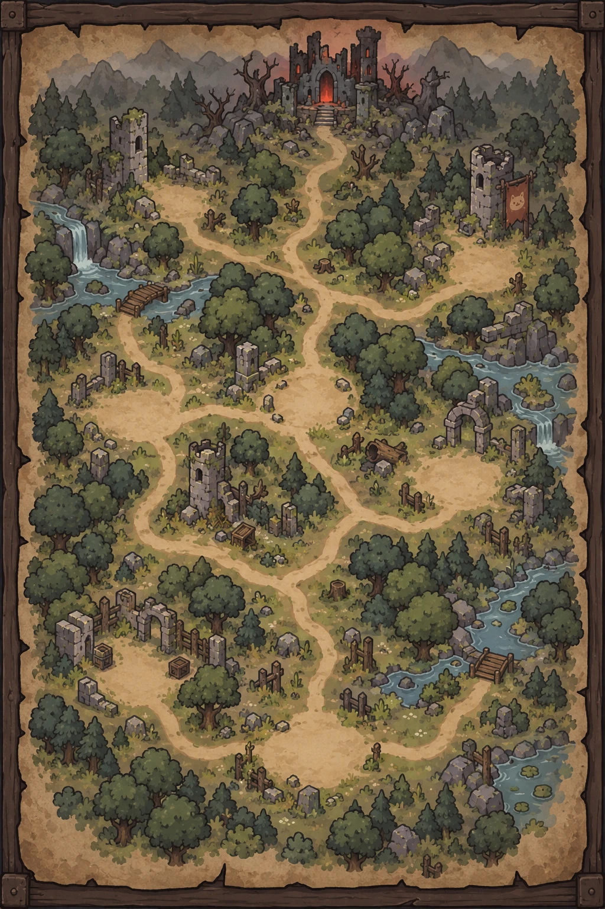

시원하게 쏟아붓고.
거리를 벌리고, 탄막 폭풍.

길도, 무기도, 살아남는 방법도.
매번 달라지는 선택이
당신만의 원정을 만듭니다.

적의 공격을 읽고, 닿기 직전에 대시.
아슬아슬한 회피 한 번으로
전투의 흐름을 바꿔보세요.
화면은 개발 중인 버전으로,
정식 출시 시 일부 내용이 달라질 수 있습니다.

총, 검, 지팡이.
세 가지 시작, 아홉 가지 전설.
무기에 유물을 더해 나만의 조합을 만드세요.
거리를 벌리고, 탄막 폭풍.

빈틈을 노리고, 천지 가르기.

마법을 펼치고, 유성우.
안전한 길로 갈까, 위험을 감수할까.
세 개의 막, 매번 달라지는 갈림길.
다음 발자국은 당신의 선택.

모험은, 작은 발자국 하나에서.
냥브로가 첫 출격을 준비하고 있어요.
출시하면 이곳에서 바로 만나요.
냥브로는 세로 화면으로 즐기는 싱글 플레이 액션 로그라이크입니다. 자동으로 공격하는 고양이를 움직여 적의 공격을 피하고, 갈림길과 보상을 선택하며 세 개의 막을 탐험합니다.
네. 냥브로는 오프라인으로 플레이할 수 있습니다. 진행 상황과 설정은 플레이하는 기기에 저장됩니다.
App Store와 Google Play 출시를 준비하고 있습니다. 출시일은 아직 정해지지 않았으며, 등록이 완료되면 이 페이지의 다운로드 링크가 열립니다.